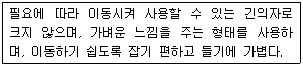
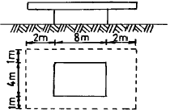

실내건축산업기사 (2003-05-25 기출문제)
1과목: 실내디자인론
1. 건물을 세로로 절단한 후 수평방향에서 본 도면으로 실내 공간의 바닥, 천정등의 내부구조를 나타내주는 도면은?
- 입면도
- 측면도
- 전개도
- 단면도
(정답률: 57%)

2. 실내디자이너와 고객(client)과의 관계를 잘못 설명한 것은?
- 고객의 요구사항을 정확하게 파악해야 한다.
- 고객에게 결과 이외의 업무진행 상황을 알려 줄 필요는 없다.
- 고객에게 신뢰성을 줄 수 있도록 노력해야 한다.
- 고객과 접촉시 질문사항을 미리 정리한다.
(정답률: 91%)
3. 소비자 구매심리 5단계의 순서로 옳은 것은?
- 주의(A)-흥미(I)-욕망(D)-확신(C)-구매(A)
- 흥미(I)-주의(A)-욕망(D)-확신(C)-구매(A)
- 확신(C)-욕망(D)-흥미(I)-주의(A)-구매(A)
- 욕망(D)-흥미(I)-주의(A)-확신(C)-구매(A)
(정답률: 75%)
4. 다음중 실내디자인의 목적에 대한 설명으로 알맞은 것은?
- 실내디자인은 기능보다 미가 우선되어야 한다.
- 실내디자인은 우리가 살고, 일하고, 즐기는 공간을 더욱 매력있고 유용하게 해준다.
- 실내디자인은 디자이너의 입장에서 고려되어져야 한다.
- 실내디자인은 주변환경의 영향을 받지 않는 독립성을 갖는다.
(정답률: 85%)
5. 미의 구성원리중 구성체의 각 요소들간에 이질감이 느껴지지 않고 전체로서 하나와 같은 이미지를 주는 것은?
- 통일성
- 대칭성
- 리듬
- 균형
(정답률: 72%)
6. 벽의 기능에 대한 설명으로 적합하지 않은 것은?
- 공기의 움직임, 소리의 전파, 열의 이동을 제어한다.
- 인간의 시선이나 동선을 차단한다.
- 수평적 요소로서 생활을 지탱하는 기본적 요소이다.
- 공간과 공간을 구분한다.
(정답률: 82%)
7. 실내계획에 있어 모듈(Module)시스템에 대한 설명 중 적합하지 못한 것은?
- 재료절감과 경제적 시공
- 시공기간의 연장
- 대량생산의 가능
- 설계작업의 단순화
(정답률: 79%)
8. 물리적으로는 불균형이지만 시각적으로 힘의 정도에 의해 균형을 이루는 것으로 흥미로움을 주며 율동감, 약진감이 있는 것은?
- 비정형균형
- 정형균형
- 방사대칭균형
- 대칭균형
(정답률: 72%)
9. 좋은 디자인을 판단하는 척도 중 우선순위가 가장 낮은 것은?
- 기능성
- 심미성
- 경제성
- 유행성
(정답률: 82%)
10. 실내공간을 형성하는 주요 기본 구성요소로 인간의 감각 중 촉각적 요소와 관계가 가장 밀접한 것은?
- 바닥
- 벽
- 천장
- 보
(정답률: 77%)
11. 선에 대한 설명으로 적당하지 않은 것은?
- 수직선은 구조적인 높이와 존엄성을 느끼게 한다.
- 수평선은 편안하고 안락한 느낌을 준다.
- 선은 점이 이동한 궤적이며 면의 한계, 교차에서 나타난다.
- 선은 폭과 길이는 있으나 방향성은 없다.
(정답률: 79%)
12. 쇼윈도우 전면의 눈부심에 의해 상품 전시효과가 적어지는 것을 방지하기 위한 방법으로 옳지 않은 것은?
- 외부에 차양을 설치한다.
- 쇼윈도우의 내부조도를 높게한다.
- 쇼윈도우의 유리가 수직이 되도록 한다.
- 곡면유리를 사용한다.
(정답률: 55%)
13. 사무소 건축의 거대화는 상대적으로 공적공간의 확대를 도모하게 되고 이로 인해 특별한 공간적 표현이 가능하게 되었다. 이러한 거대한 공간적 인상에 자연을 도입하여 여러 환경적 이점을 갖게 하는 공간구성은?
- 포티코(Portico)
- 콜로네이드(Colonnade)
- 아케이드(Arcade)
- 아트리움(Atrium)
(정답률: 83%)
14. 전시공간에서 천장의 처리에 대한 설명 중 옳지 않은 것은?
- 조명기구, 공조설비, 화재경보기 등 제반 설비물을 설치한다.
- 천장 마감재는 흡음 성능이 높은 것이 요구된다.
- 시선을 집중시키기 위해 강한 색채를 사용한다.
- 이동스크린이나 전시물을 매달 수 있는 시설을 설치한다.
(정답률: 81%)
15. 디자인 원리 중 시각적인 힘의 강약에 단계를 주어 디자인의 일부분에 주어지는 초점이나 흥미를 중심으로 변화를 의도적으로 조성하는 것으로 규칙성이 갖는 단조로움을 극복하기 위해 사용하는 것은?
- 통일
- 질서
- 조화
- 강조
(정답률: 75%)
16. 실내디자인 계획에 있어 고려해야할 사항과 가장 거리가 먼 것은?
- 난방 및 조명설비
- 대상건물의 구조적 안전성
- 건물기초 및 지내력
- 소방시설 기준
(정답률: 63%)
17. 실내디자인 프로세스가 기획, 설계, 시공, 사용 후 평가의 4단계의 과정을 거쳐서 진행한다고 했을 때, 디자인 의도와 고객이 추구하는 방향에 맞추어 대상 공간에 대한 디자인을 도면으로 제시하는 단계는?
- 기획단계
- 설계단계
- 시공단계
- 사용 후 평가단계
(정답률: 59%)
18. 호텔 객실중 보통 하나 혹은 그 이상의 침실에 거실을 연결시켜 놓은 것을 일컫는 것으로 일반 객실보다 규모가 크고 보다 안락하게 구성되어 있는 특별 객실의 이름은?
- 트윈룸(twin room)
- 스튜디오(studio)
- 스위트룸(suite room)
- 더블룸(double room)
(정답률: 69%)
19. 다음 내용은 어떤 가구에 관한 설명인가?

- 카우치(couch)
- 오토만(otto man)
- 라운지체어(lounge chair)
- 풀업체어(pull-up chair)
(정답률: 48%)
20. 실내계획에 있어서 가장 중심이 되는 치수 개념은?
- 가구치수
- 인체치수
- 구조치수
- 마감재치수
(정답률: 85%)
2과목: 색채 및 인간공학
21. 다음 중 게스탈트(Gestalt)의 법칙이 아닌 것은?
- 근접한 자극들이 합쳐져 지각을 체계화한다.
- 근접한 자극 중 유사한 것끼리 지각된다.
- 특정한 형식의 자극은 그 형식이 계속 유지되는 것으로 인지된다.
- 불완전한 형태는 불완전한 상태 그대로 체계화된다.
(정답률: 67%)
22. 딱딱하고, 찬 느낌의 색은?
- 중성색 계열의 중명도색
- 난색계열의 저채도색
- 한색계열의 저채도색
- 중성색계열의 고명도색
(정답률: 88%)
23. 다음 색채 중 무채색이 아닌 것은?
- 연두색
- 흰색
- 회색
- 검정색
(정답률: 90%)
24. 짐을 나르는 방법 중 산소 소비량이 가장 많은 것은?
- 손에 들고 나른다.
- 카트(Cart)를 이용하여 밀고 나른다.
- 어깨에 메고 나른다.
- 머리에 이고 간다.
(정답률: 84%)
25. 혀의 양측면에서 느끼는 맛은?
- 단맛, 신맛
- 신맛, 짠맛
- 짠맛, 쓴맛
- 쓴맛, 단맛
(정답률: 37%)
26. 다음 중 인근색 조화에 해당하는 것은?
- 5Y와 10YR
- 5P와 5BG
- 5P와 5GY
- 5BG와 10P
(정답률: 61%)
27. 다음 제품의 색에 관한 설명 중 틀린 것은?
- 제품의 색이 난색계이면 실제보다 작게 보일 우려가 있다.
- 제품의 색은 브랜드 이미지를 형성하는데 중요한 역할을 한다.
- 제품에 대한 구매자의 선호도에는 색의 후광 효과가 작용한다.
- 포장색이 저명도이면 열을 흡수해서 내부 제품의 부패와 손상을 촉진시킬 수도 있다.
(정답률: 54%)
28. 기온이 너무 낮을 경우 일어나는 반응 중 잘못된 것은?
- 떤다.
- 관절과 근육이 딱딱해진다.
- 인체의 열을 주위의 공기에 방산하지 못한다.
- 저속도의 기류에도 바람의 느낌을 호소한다.
(정답률: 64%)
29. HV/C의 먼셀 기호가 올바르게 설명된 것은?
- 색상.채도/명도
- 명도.채도/색상
- 채도.명도/색상
- 색상.명도/채도
(정답률: 54%)
30. 흰색 도화지는 밝은 곳에서나 어두운 곳에서나 모두 흰색으로 인지하게 되는 현상은?
- 주관성
- 항상성
- 시인성
- 잔상
(정답률: 75%)
31. 다음 중 작업내용에 따른 작업대의 높이가 높은 순에서 낮은 순서로 배치된 것이 맞는 것은?
- 타이핑 - 쓰고 읽기 - 정밀작업
- 정밀작업 - 쓰고 읽기 - 타이핑
- 쓰고 읽기 - 정밀작업 - 타이핑
- 정밀작업 - 타이핑 - 쓰고 읽기
(정답률: 65%)
32. 색은 연상과 경험에서 유발되는 감정에 의하여 더운 색과 찬 색으로 구분되는데, 다음 중 중성색은?
- 귤색
- 연두
- 청록
- 감청
(정답률: 48%)
33. 인간의 운동기능에서 진전(振顫:떨림)이 증가되는 경우는?
- 움직이는 것과 마찰이 있을 때
- 몸의 움직이는 부분이 지지대에 의해 받쳐져 있을 때
- 몸의 움직이는 부분이 일하고 있을때, 몸이 단단히 받쳐져 있을 경우
- 떨지 않도록 노력할 때
(정답률: 60%)
34. 인체의 각 부분에서 통각이 가장 예민한 곳은?
- 가슴
- 복부
- 발바닥
- 손가락
(정답률: 45%)
35. 음원과 관측자가 상대속도를 가질 때 음원의 소리보다 더 높거나 낮은 소리를 듣게 되는 현상은?
- 도플러효과
- 가현운동
- 은폐작용
- 여파작용
(정답률: 47%)
36. 선천성 전색맹은 눈 속의 무엇이 이상이 생겨서 되는 것인가?
- 수정체
- 현상체
- 간상체
- 추상체
(정답률: 42%)
37. 음원으로부터의 직접음과 벽체 등에서 반사된 소리가 그 시간차 때문에 한 소리가 둘이상으로 들리는 현상은?
- 회절
- 공명
- 반향
- 잔향
(정답률: 14%)
38. 다음 중 명시도가 가장 높은 경우는?
- 백색 배경의 청색(2.5B 4/10)
- 흑색 배경의 자주색(2.5RP 3.5/11)
- 백색 배경의 주황색(5YR 8/12)
- 흑색배경의 녹색(2.5G 3/5)
(정답률: 33%)
39. 시(視)식별에 영향을 미치는 요소와 거리가 먼 것은?
- 조도
- 대비
- 움직임
- 반응시간
(정답률: 56%)
40. 무지개색의 순서대로 색을 배치하였을 때, 다음 어떤 사항과 관련이 가장 큰가?
- 채도조화
- 색상조화
- 보색대비
- 명도대비
(정답률: 48%)
3과목: 건축재료
41. 목재의 건조에 관한 다음 기술중 옳지 않은 것은?
- 일반적으로 목재는 사용전에 될 수 있는 한 건조시킬 필요가 있다.
- 건조되지 않은 목재는 건조한 목재에 비해 부패하기 쉬우나 강도나 탄성계수는 높다.
- 건조는 목재에 도장이나 약재 처리를 용이하게 한다.
- 수액을 제거한 목재는 건조가 빠르다.
(정답률: 62%)
42. 프탈산과 글리세린수지를 변성시킨 포화폴리에스테르수지로 내후성, 접착성이 우수하며 페인트, 바니쉬, 래커 등의 도료로 사용되는 합성수지는?
- 알키드수지
- A.B.S수지
- 스티롤수지
- 에폭시수지
(정답률: 47%)
43. 모르타르(mortar)에 대한 설명 중 틀린 것은?
- 시멘트, 모래와 함께 수축균열방지, 접착력 증가, 작업성의 향상 등을 위해 혼화재를 첨가하여 배합한다.
- 배합재료는 백화현상을 방지하기 위해 가용성 염류가 함유된 것을 사용한다.
- 목조주택을 방화구조로 하는데 사용되기도 한다.
- 다른 마감재의 접착제로도 사용된다.
(정답률: 37%)
44. 실내의 라디에이터 커버, 환기구멍 등에 사용되는 금속가공 제품은?
- 펀칭 메탈(punching metal)
- 벤틸레이터(ventilator)
- 리브 라아드(rib lath)
- 솔라 스크리인(solar screen)
(정답률: 63%)
45. 합성수지 제품의 장점으로 옳지 않은 것은?
- 경량이다.
- 마모가 적고 탄력성이 크다.
- 탄성계수가 철보다 크다.
- 내수성이 우수하다.
(정답률: 43%)
46. 클로로프렌고무 접착제에 관한 기술 중 옳지 않은 것은?
- 도자기질 내장 타일의 접착제로 주로 사용된다.
- 합성고무계 접착제로서 내수성, 내화학성이 우수하다
- 제품명 네오프렌(Neoprene)으로 널리 알려져 있다.
- 석유계 용제에 녹지 않는다.
(정답률: 26%)
47. 골재의 구비조건으로 부적당한 것은?
- 골재의 입형은 납작하고 가늘고 긴 것이어야 한다.
- 골재의 크기는 크고 작은 알이 고루 섞여 있는 것이 좋다.
- 골재에는 불순물이 포함되어 있지 않아야 한다.
- 골재의 강도는 시멘트 페이스트의 강도보다 커야 한다.
(정답률: 43%)
48. 콘크리트의 크리프(creep)현상의 설명과 관계가 먼 것은?
- 재하개시의 재령이 짧은 만큼 크리프는 커진다.
- 부재치수가 작을수록 크다.
- 보양이 불량할수록 크다.
- W/C가 작을수록 크다.
(정답률: 34%)
49. 백시멘트와 종석, 안료를 혼합하여 만든 것으로 천연석과 유사한 외관을 가진 인조석은?
- 라프코트(rough coat)
- 트래버틴
- 의석
- 석면
(정답률: 12%)
50. 점토의 종류와 제품과의 관계를 나타내고 있다. 부적절한 것은?
- 토기질점토 - 벽돌
- 도기질점토 - 테라코타
- 석기질타일 - 외장타일
- 자기질타일 - 기와
(정답률: 48%)
51. 다음중 목재의 길이에 따른 규격의 분류상 정척물에 속하지 않는 것은?
- 1.8m
- 4.5m
- 3.6m
- 2.7m
(정답률: 34%)
52. 다음 점토소성제품에 관한 설명 중 올바른 것은?
- 테라코타는 속이 빈 대형점토 소성제품으로 난간벽, 주두 등에 사용된다.
- 내부벽용 타일은 외부벽용에 비하여 내마모성이 강하고 흡수율이 적은 것을 사용해야 한다.
- 점토소성제품의 흡수성은 토기, 자기, 석기, 도기 순으로 크다.
- 내화벽돌로 벽체를 시공하는 경우 벽돌의 부착강도를 크게 하기 위하여 물축임을 실시한다.
(정답률: 24%)
53. 도료의 사용목적과 가장 관계가 먼 것은?
- 내화학성
- 단면증가
- 광택효과
- 방수, 방습
(정답률: 56%)
54. 창호와 창호철물에 대한 연결이다. 관련없는 항목은?
- 돌쩌귀 : 여닫이문
- 플로어힌지 : 자재여닫이문
- 지도리 : 회전창
- 도어클로우저 : 미서기창
(정답률: 54%)
55. 마루판으로 사용되지 않는 것은?
- 플로링 보드(flooring board)
- 파키트리 패널(parquetry panel)
- 파키트리 블록(parquetry block)
- 코펜하겐 리브(copenhagen rib)
(정답률: 64%)
56. 현장에서 가공할 수 있는 유리는?
- 강화유리
- 복층유리
- 형판유리
- 유리블록
(정답률: 45%)
57. 슬럼프 시험(slump test)은 콘크리트의 무엇을 측정하기위한 것인가?
- 강도
- 시공연도
- 공기량
- 물, 시멘트의 중량비
(정답률: 31%)
58. 석재중 변성암이 아닌 것은?
- 안산암
- 대리석
- 사문암
- 트레버틴
(정답률: 32%)
59. 미장재료에 관한 기술로서 옳지 않은 것은?
- 회반죽벽은 습기가 많은 장소에서 시공이 곤란하다.
- 시멘트 모르타르는 물과 화학반응하여 경화되는 수경성 재료이다.
- 돌로마이트 플라스터는 마그네시아 석회에 모래, 여물을 섞어 반죽한 바름벽 재료를 말한다.
- 석고 플라스터는 공기 중의 탄산 가스를 흡수하여 경화한다.
(정답률: 60%)
60. 강의 열처리 방법중 강을 연화하거나 내부응력을 제거할 목적으로 800℃ ∼ 1000℃로 가열하여 소정의 시간까지 유지한 후, 로(爐)속에서 서서히 냉각하는 열처리법은?
- 뜨임질
- 담금질
- 풀림
- 불림
(정답률: 26%)
4과목: 건축일반
61. 돌구조의 표면 마무리 상태를 거친 정도에서 덜 거친 정도로 옳게 배열한 것은?
- 메다듬-정다듬-도드락다듬-잔다듬
- 메다듬-물갈기-잔다듬-정다듬
- 도드락다듬-정다듬-잔다듬-물갈기
- 메다듬-잔다듬-도드락다듬-정다듬
(정답률: 34%)
62. 예술공예(arts and crafts)운동의 특성이라 볼 수 없는 것은?
- 수공예의 중요성
- 양식의 역사주의를 표명
- 혼란한 미학적 가치에 대한 도덕적 반응
- 전통적인 지역적 재료의 사용
(정답률: 17%)
63. 목재 접합시 주의사항이 아닌 것은?
- 접합은 응력이 적은 곳에서 만들 것.
- 목재는 될 수 있는 한 적게 깍아내어 약하게 되지 않게 할 것.
- 접합의 단면은 응력 방향과 평행으로 할 것.
- 공작이 간단한 것을 쓰고 모양에 치중하지 말 것.
(정답률: 28%)
64. 각층별 바닥면적이 1,000m2이고 각층별 거실면적이 700m2인 15층 집회장에 설치하는 승용승강기는 몇 대인가? (단, 8인승)
- 3대
- 4대
- 5대
- 6대
(정답률: 49%)
65. 색채에서 색이름과 먼셀기호가 잘못 연결된 것은 어느 것인가?
- 빨강-R
- 주황-YR
- 자주-PB
- 연두-GY
(정답률: 68%)
66. 그림과 같은 건축물의 건축면적은?

- 32m2
- 40m2
- 54m2
- 72m2
(정답률: 25%)
67. 반자구조중 제물반자에 속하는 것은?
- 널반자
- 넓은판반자
- 바름반자
- 구성반자
(정답률: 28%)
68. 벽돌조 창문의 나비가 2.4ｍ인 경우 어느 인방구조가 가장 합리적인가?
- 벽돌조 평아치를 쌓는다.
- 석재 인방보를 설치한다.
- 철근콘크리트 인방보를 설치한다.
- 외부는 벽돌을 세워 놓고 내부는 평아치를 쌓는다.
(정답률: 36%)
69. 콘크리트용 골재에 대한 일반적인 조건 중 알맞지 않은 것은?
- 불순물이 없어야 한다.
- 표면이 거칠고 구형에 가까운 것이어야 한다.
- 강도가 커야 한다.
- 알칼리-골재 반응성이 있는 것이어야 한다.
(정답률: 31%)
70. 방염대상물품을 방염성능이 있는 것으로 하여야 하는 특수장소에 해당하지 않는 것은?
- 아파트의 층수가 11층 이상인 것
- 안마시술소
- 헬스클럽장
- 일반숙박시설
(정답률: 34%)
71. 한국 전통주거의 가구에서 수납용으로 분류할 수 없는 것은 어느 것인가?
- 문갑
- 소반
- 농
- 반닫이
(정답률: 59%)
72. 완공된 후 건축물이 본래의 기능을 수행하고 있는지 사용해 보고 난 후에 반응을 평가하는 거주 후 평가를 무엇이라고 하는가?
- AIDAS
- VMD
- PSALI
- POE
(정답률: 29%)
73. 서양 고전건축에서 엔타블레이처(Entablature)의 구성요소가 아닌 것은?
- 페디먼트(Pediment)
- 아키트레이브(Architrave)
- 프리즈(Frieze)
- 코니스(Cornice)
(정답률: 26%)
74. 콘크리트 이어붓기에 대한 설명으로 옳지 않은 것은?
- 보 및 바닥판은 간사이의 단부에서 이어붓는다.
- 레이턴스를 제거한 후 이어붓는다.
- 이음면은 거칠게 하고 청소후 시멘트 페이스트를 바른다.
- 전단력이 가장 적은 곳에서 이어붓는다.
(정답률: 22%)
75. 비상조명등을 설치해야 할 소방대상 건축물의 규모 기준으로 맞는 것은?
- 층수 4층 이상으로서 연면적 3300m2이상
- 층수 4층 이상으로서 연면적 3000m2이상
- 층수 5층 이상으로서 연면적 3300m2이상
- 층수 5층 이상으로서 연면적 3000m2이상
(정답률: 52%)
76. 건축법규상 거실에 대하여 바르게 규정한 것은? (단, 숙박시설의 객실의 경우)
- 채광을 위한 창문면적은 그 거실 바닥면적의 1/20 이상
- 환기를 위한 창문등의 면적은 그 거실 바닥면적의 1/10 이상
- 거실의 반자높이는 2.4m이상, 노대 아래부분 높이는 2.1m이상
- 수시로 개방할 수 있는 미닫이로 구획된 2개의 거실은 채광 및 환기의 규정 적용시 1개의 거실로 본다.
(정답률: 51%)
77. 거실 각 부분으로부터 지상으로 통하는 직통계단까지의 보행 거리에 관한 기술 중 틀린 것은?
- 2층 목조공장: 35m 이하
- 주요구조부가 내화구조인 5층 사무소 : 50m 이하
- 주요구조부가 내화구조인 10층 아파트 : 50m 이하
- 주요구조부가 내화구조인 16층 아파트 : 40m 이하
(정답률: 28%)
78. 철근콘크리트 기둥에 관한 설명 중 옳지 않은 것은?
- 최소 단면치수는 20㎝ 이상으로 한다.
- 최소단면적은 600cm2 이상으로 한다.
- 주근의 좌굴방지를 위하여 띠철근을 사용한다.
- 다각형 기둥에는 주근을 4개 이상 배근한다.
(정답률: 21%)
79. 집회실 바닥면적이 165m2인 교회의 최소 반자 높이는?
- 2.1m
- 2.7m
- 3.0m
- 4.0m
(정답률: 19%)
80. 고대 기둥의 양식중 그리이스의 3대 양식이 아닌 것은?
- 이오니아식
- 도리아식
- 터스칸식
- 코린트식
(정답률: 56%)